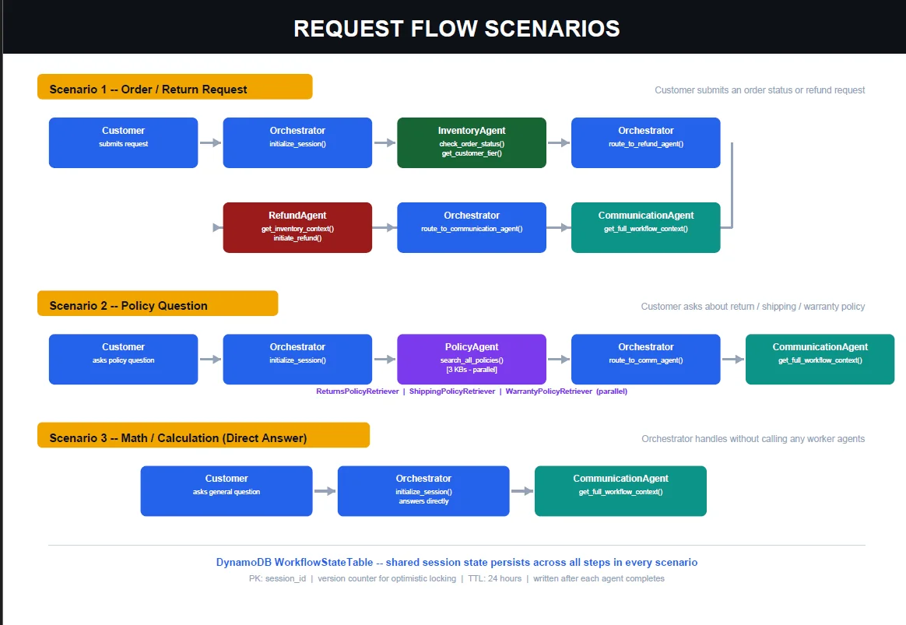
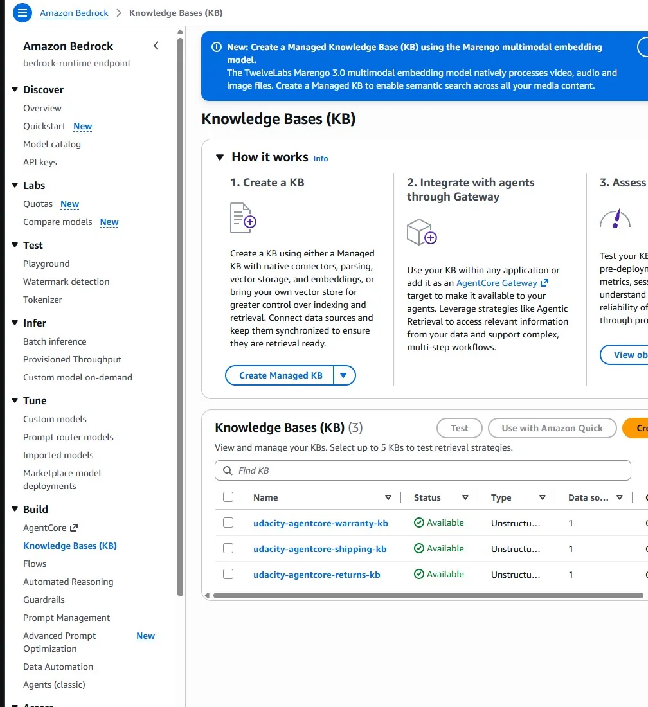
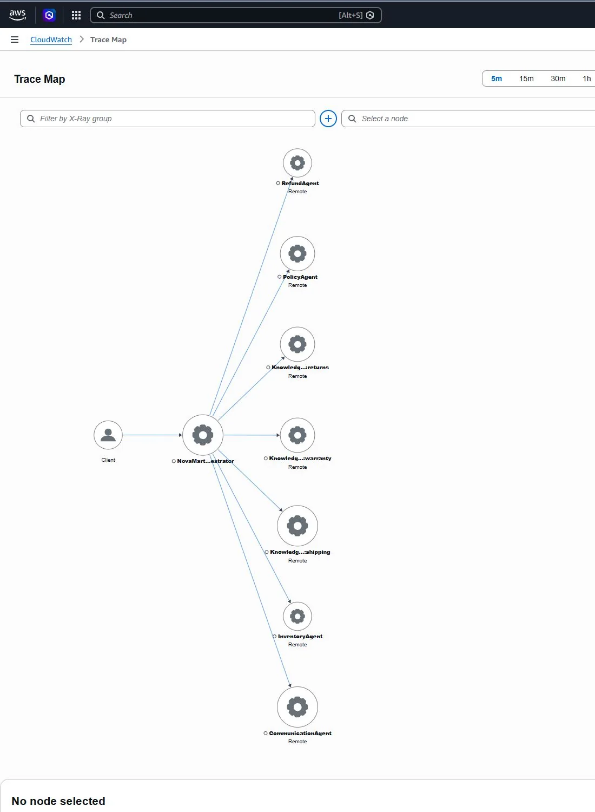

Why split one assistant into five
NovaMart is a support assistant for a fictional online shop and the capstone of the Future AWS Agent Engineer Nanodegree. A single customer question such as "Where's my order, and can I still return it?" needs order data, a refund decision and policy text at the same time. One agent holding every tool tends to blur those jobs: it reads policy while deciding refunds, or answers account questions with policy text.
NovaMart gives each job to its own agent, makes the routing between them explicit, and keeps their work in one shared, versioned record. The official assignment run scored 120/120 on 8 October 2026.
Architecture
The system runs on Amazon Bedrock AgentCore Runtime and is built with the Strands Agents SDK. A Bedrock Guardrail checks each request before it reaches the orchestrator. Order and customer data live in DynamoDB, policy documents live in three Bedrock Knowledge Bases backed by Amazon S3 Vectors, and CloudWatch with AWS X-Ray provides tracing.

Five agents, one job each
| Agent | Responsibility | Tools |
|---|---|---|
| Orchestrator (Claude Haiku 4.5) | Initialise state, choose specialists, enforce routing, call Communication last | initialize_session, four route_to_* |
| Inventory | Order and customer facts, no policy decisions | check_order_status, get_customer_tier, list_customer_orders |
| Policy | Search three policy domains at once and summarise grounded passages | search_all_policies |
| Refund | Evaluate eligibility; refund only when explicitly requested | get_inventory_context, initiate_refund |
| Communication | Read the accumulated state and write the customer reply | get_full_workflow_context |
The four workers run on Claude Sonnet 4.5; the cheaper, faster Haiku model handles routing.
A routing contract, not a vibe
Routing is written down as six rules and checked by tests in continuous integration, rather than left to the orchestrator's judgement:
| Request type | Route before the final reply |
|---|---|
| Account details or customer tier | Inventory only, never Policy |
| Order status or history | Inventory, then Refund for evaluation only |
| Policy-only question | Policy |
| Explicit return or refund | Inventory, then Policy, then Refund |
| Mixed order and policy | Inventory, then Policy |
| Arithmetic | Orchestrator only |
Communication is always the last step. An order-status route may pass through the Refund agent to evaluate eligibility, but it never authorises a refund unless the customer asks for one.


Searching three knowledge bases at once
Returns, shipping and warranty policies each have their own knowledge base, so a question can need any combination of them. The Policy agent's single tool starts three retriever sub-agents in a thread pool and joins their grounded findings with source information:
@tool
def search_all_policies(query: str) -> str:
"""Query all three policy knowledge bases in parallel."""
retrievers = {
"Returns": returns_retriever,
"Shipping": shipping_retriever,
"Warranty": warranty_retriever,
}
# each retriever runs concurrently in a ThreadPoolExecutor,
# then the passages are combined with their sourcesThe total wait is roughly the slowest of the three searches rather than their sum, and the Bedrock retrieval details stay inside the tool, so the agent's prompt only reasons over the passages it gets back.


Shared state that cannot be silently overwritten
Agents pass their results through a DynamoDB WorkflowStateTable, not only through
prompts. Each record is keyed by session_id and stores the customer ID, a
creation time, a 24-hour TTL, a version number and one result column per worker. Every write
is conditional on the version it read:
read state → version = n
worker produces result
conditional write → only if version is still n
✓ success → store result, version = n + 1
✗ conflict → reload state and retryThis is optimistic locking. Two workers cannot overwrite each other without noticing, and the Communication agent always reads a complete record. AgentCore Memory complements rather than duplicates this: DynamoDB holds one request's operational state, while Memory's session summary strategy keeps conversational summaries for seven days.
Safety and privacy by default
- Service boundaries validate input and configuration before any agent runs.
- Guardrail interventions become controlled responses rather than unhandled errors.
- Telemetry uses process-local pseudonyms, omits raw request text and logs tool argument names without their values.
- Resource identifiers come from environment variables or ignored local files, never the repository.
Proving it works
With CloudWatch logging and X-Ray tracing enabled, the trace map after the final run showed the orchestrator connected to all four workers and all three knowledge bases, with no failed nodes. If the trace map does not match the architecture diagram, one of them is wrong.


| Task: rubric area | Score |
|---|---|
| 2: Multi-agent graph, tools, models and routing | 40/40 |
| 3: Guardrail and AgentCore Runtime | 20/20 |
| 4: AgentCore Memory | 15/15 |
| 5: Knowledge Bases and parallel retrieval | 25/25 |
| 6: CloudWatch and X-Ray observability | 20/20 |
| Total | 120/120 |
Delivery without long-lived keys
The repository separates credential-free CI from protected delivery. The validation workflow runs on every push and pull request with read-only permissions and no AWS credentials. It lints and compiles the code, rejects committed secrets and private configuration, checks secure defaults and the routing contract, runs the assignment test suite and builds the CDK project. Deployment is manual only: an approval-protected environment uses GitHub OIDC to obtain short-lived AWS credentials, so no access key is ever stored.
Advice for a first multi-agent system
- One job per agent. If two agents could both answer a question, the routing rules are not specific enough.
- Write the routing down. A small table of rules can be tested; a prompt that "usually routes well" cannot.
- Put state where you can inspect it. A versioned table is auditable; a prompt is not.
- Run independent steps in parallel. It is easy once retrieval is wrapped in one tool.
- Plan cleanup. TTLs reduce stale data, but the deployment still has to be deleted when the review ends.